Chapter 3 Time series decomposition
3.1 Transformation and adjustments
3.1.1 Calendar adjustments
Some of the variation seen in seasonal data may be due to simple calendar effects. In such cases, it is usually much easier to remove the variation before doing any further analysis.
For example, if you are studying the total monthly sales in a retail store, there will be variation between the months simply because of the different numbers of trading days in each month, in addition to the seasonal variation across the year. It is easy to remove this variation by computing average sales per trading day in each month, rather than total sales in the month. Then we effectively remove the calendar variation. Simpler patterns are usually easier to model and lead to more accurate forecasts.
3.1.2 Population adjustments
use index per capita rather than index itself (when related to population)
3.1.3 Inflation adjustments
Price index such as CPI (Consumer Price Index) allows us to compare the growth or decline of industries relative to a common price value. For example, looking at aggregate “newspaper and book” retail turnover from aus_retail, and adjusting the data for inflation using CPI from global_economy allows us to understand the changes over time.
print_retail <- aus_retail %>%
filter(Industry == "Newspaper and book retailing") %>%
index_by(Year = year(Month)) %>%
summarise(Turnover = sum(Turnover))
aus_economy <- global_economy %>%
filter(Code == "AUS")print_retail %>%
left_join(aus_economy, by = "Year") %>%
mutate(Turnover_adj = Turnover / CPI) %>%
pivot_longer(c(Turnover, Turnover_adj),
names_to = "type", values_to = "Turnover") %>%
ggplot() +
geom_line(aes(Year, Turnover)) +
facet_wrap(~ type, scales = "free_y")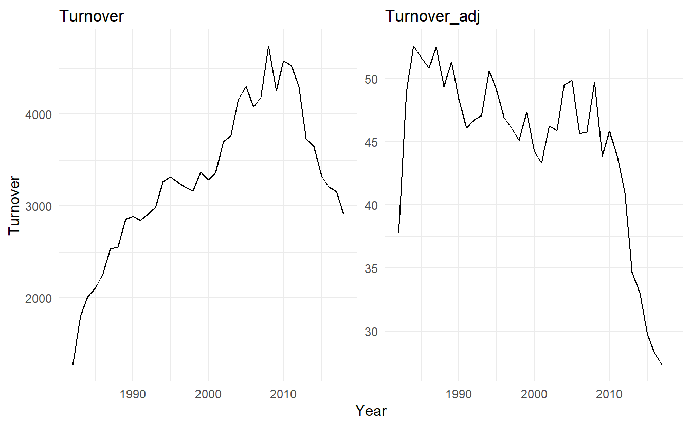
3.1.4 Mathematical transformation (Box-Cox)
If the data shows variation that increases or decreases with the level of the series, then a transformation can be useful.
A useful family of transformations, that includes both logarithms and power transformations, is the family of Box-Cox transformations, which depend on the parameter \(\lambda\) and are defined as follows:
\[\begin{equation} \tag{3.1} w_t = \begin{cases} \log{y_t}& \text{if} \; \lambda = 0 \\ (y^\lambda_t - 1)/\lambda & \text{otherwise} \end{cases} \end{equation}\]
The logarithm in a Box-Cox transformation is always a natural logarithm (i.e., to base \(e\)). So if \(λ = 0\), natural logarithms are used, but if \(\lambda \not= 0\), a power transformation is used, followed by some simple scaling.
If \(\lambda = 1\), then \(w_t = y_t−1\), so the transformed data is shifted downwards but there is no change in the shape of the time series. But for all other values of \(\lambda\), the time series will change shape.
A good value of is one which makes the size of the seasonal variation about the same across the whole series, as that makes the forecasting model simpler. The guerrero feature can be used to choose (estimate) a value of lambda for you. In the following case it chooses \(\lambda = 0.12\).
lambda <- aus_production %>%
features(Gas, guerrero) %>%
pull(1)
lambda
#> [1] 0.1204864
aus_production %>%
mutate(Gas_transformed = box_cox(Gas, lambda)) %>%
pivot_longer(c(Gas, Gas_transformed), names_to = "type", values_to = "value") %>%
ggplot() +
geom_line(aes(Quarter, value)) +
facet_wrap(~ type, scales = "free")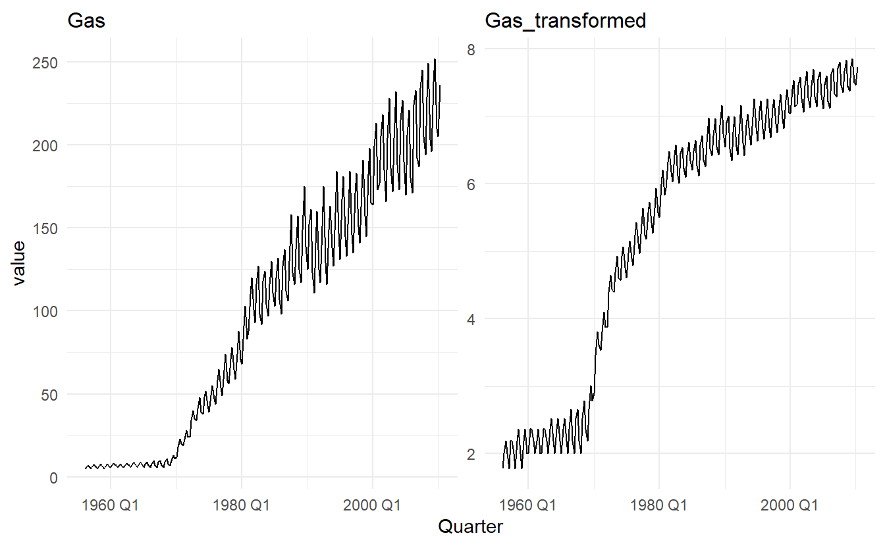
3.2 Moving averages
A moving average of order \(m\) can be written as:
\[ \bar{T}_t = \frac{1}{m}\sum_{j = -k}^{k}{y_{t+j}} \] where \(m = 2k + 1\)
For example, a moving average of order 5 will select a data point, takes 2 points before it and 2 points after it and compute the average of these 5 points.
In practice, for top or bottom observations where are no value in either the first or last \((m - 1) / 2\) position, the original value will be used to avoid NULL for border observations. To suppress this behaviour, use .complete = TRUE in slide_ functions.
library(slider)
slide(1:5, ~ mean(.x), .before = 2, .after = 2)
#> [[1]]
#> [1] 2
#>
#> [[2]]
#> [1] 2.5
#>
#> [[3]]
#> [1] 3
#>
#> [[4]]
#> [1] 3.5
#>
#> [[5]]
#> [1] 4
slide(1:5, ~ mean(.x), .before = 2, .after = 2, .complete = TRUE)
#> [[1]]
#> NULL
#>
#> [[2]]
#> NULL
#>
#> [[3]]
#> [1] 3
#>
#> [[4]]
#> NULL
#>
#> [[5]]
#> NULLIn the book slide_ functions from tsibble packaege are used to do sliding window calculation, which will be superseded by the slider package in the future. For this reason I will try to make some replacements whenever there is a need for sliding window functions
library(slider)
aus_exports <- global_economy %>%
filter(Country == "Australia") %>%
mutate(
`5-MA` = slide_dbl(Exports, ~ mean(.x), .before = 2, .after = 2)
) %>%
pivot_longer(c(Exports, `5-MA`), names_to = "type", values_to = "Export")
aus_exports %>%
ggplot(aes(Year, Export, color = type)) +
geom_line() +
scale_color_manual(values = c("red", "black"))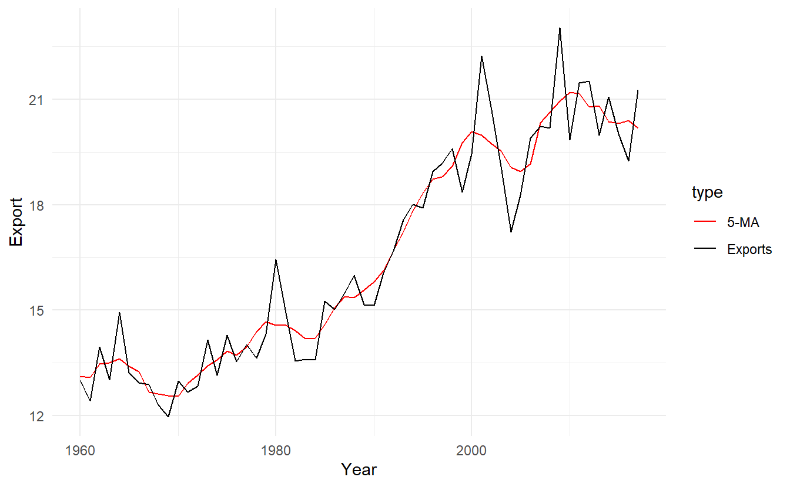
Notice that the trend-cycle (in red) is smoother than the original data and captures the main movement of the time series without all of the minor fluctuations. The order of the moving average determines the smoothness of the trend-cycle estimate. In general, a larger order means a smoother curve. Figure below shows the effect of changing the order of the moving average for the Australian exports data.
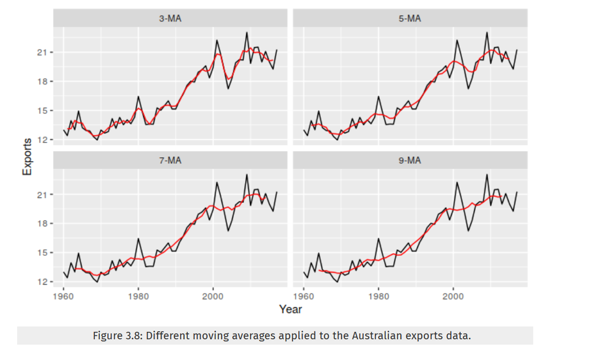
Simple moving averages such as these are usually of an odd order (e.g., \(3\), \(5\), \(7\), etc.). This is so they are symmetric: in a moving average of order \(m = 2k + 1\), the middle observation, and \(k\) observations on either side, are averaged. But if m was even, it would no longer be symmetric.
3.2.1 Moving averages of moving averages
When \(m\) is even, we could still compute a \(m-MA\) though losing symmetry. A \(4-MA\) can be defined as :
\[ \hat{T}_t = \frac{1}{4}(y_{t-1} + y_t + y_{t+1} + y_{t+2}) \]
It is possible to apply a moving average to a moving average. One reason for doing this is to make an even-order moving average symmetric.
For example, we might take a moving average of order \(4\), and then apply another moving average of order \(2\) to the results. And the final result, \(2\times 4 -MA\) can be written as:
\[ \begin{align} \hat{T}_t &= \frac{1}{2}[ \frac{1}{4}( y_{t-2} + y_{t-1} + y_t + y_{t+1}) + \frac{1}{4}(y_{t-1} + y_{t} + y_{t + 1} + y_{t+2})] \\ &= \frac{1}{8}y_{t-2} + \frac{1}{4}y_{t-1} + \frac{1}{4}y_{t} + \frac{1}{4}y_{t+1} + \frac{1}{8}y_{t+2} \end{align} \]
Now we can see that \(2\times 4 -MA\) is an weighted average of 5 values centered on \(y_t\), and is symmetric.
Other combinations of moving averages are also possible. For example, a \(3 \times 3-MA\) is often used, and consists of a moving average of order \(3\) followed by another moving average of order \(3\). In general, an even order MA should be followed by an even order MA to make it symmetric. Similarly, an odd order MA should be followed by an odd order \(MA\).
In general, a \(2×m-MA\) is equivalent to a weighted moving average of order \(m+1\) where all observations take the weight \(1/m\), except for the first and last terms which take weights \(1/(2m)\)
3.2.2 Estimating the trend-cycle component with seasonal data
The most common use of centred moving averages is for estimating the trend-cycle from seasonal data. Consider the \(2\times 4- MA\):
\[
\hat{T}_t = \frac{1}{8}y_{t-2} +
\frac{1}{4}y_{t-1} +
\frac{1}{4}y_{t} +
\frac{1}{4}y_{t+1} +
\frac{1}{8}y_{t+2}
\]
When applied to quarterly data, each quarter of the year is given equal weight as the first and last terms apply to the same quarter in consecutive years. Consequently, the seasonal variation will be averaged out and the resulting values of \(\hat{T}_t\) will have little or no seasonal variation remaining. A similar effect would be obtained using a \(2×8-MA\) or a \(2×12-MA\) to quarterly data.
As is noted above, a \(2×m-MA\) is equivalent to a weighted \(m + 1 -MA\), which handles a \(m\) seasonal period when \(m\) is even. So, if the seasonal period is even and of order \(m\), we use a \(2×m-MA\) to estimate the trend-cycle. If the seasonal period is odd and of order \(m\), we use a \(m-MA\) to estimate the trend-cycle.
In aus_livestock data we can see some sort of seasonality:

Since it is collected monthly, we can use a \(2\times12-MA\) to average out the seasonality:
capital_livestock_ma <- aus_livestock %>%
filter(Animal == "Pigs", State == "Australian Capital Territory") %>%
mutate(`2-MA` = slide_dbl(Count, ~ mean(.x), .before = 1),
`12x2-MA` = slide_dbl(`2-MA`, ~ mean(.x), .before = 5, .after = 6)) %>%
select(-`2-MA`) %>%
pivot_longer(4:5, names_to = "type", values_to = "count")
capital_livestock_ma %>%
ggplot(aes(Month, count, color = type)) +
geom_line() +
scale_color_manual(values = c("red", "gray"))
3.2.3 Weighted moving averages
Combinations of moving averages result in weighted moving averages. For example, the \(2\times4-MA\) discussed above is equivalent to a weighted \(5-MA\) with weights given by \([\frac{1}{8},\frac{1}{4},\frac{1}{4},\frac{1}{4},\frac{1}{8}]\). In general, a weighted \(m-MA\) can be written as
\[ \hat{T}_t = \sum_{j = -k}^{k}{a_jy_{t+j}} \]
where \(m = 2k + 1\). It is important that the weights all sum to one and that they are symmetric so that \(a_j=a_{−j}\). The simple \(m-MA\) is a special case where all of the weights are equal to \(1/m\).
A major advantage of weighted moving averages is that they yield a smoother estimate of the trend-cycle. Instead of observations entering and leaving the calculation at full weight, their weights slowly increase and then slowly decrease, resulting in a smoother curve.
3.3 Classical decomposition
us_retail_employment <- fpp3::us_employment %>%
filter(year(Month) >= 1990, Title == "Retail Trade") %>%
select(-Series_ID)classical_dcmp <- us_retail_employment %>%
model(classical = feasts:::classical_decomposition(Employed, type = "additive")) %>%
components()
classical_dcmp %>% autoplot()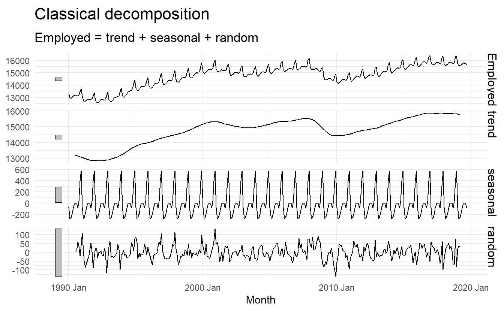
3.4 X11 decomposition
feasts:::X11(Employed, type = "additive") makes specifications about a X11 additive model, and model() were called to estimate it, and components() gives \(\hat{T}_t\), \(\hat{S}_t\) and \(\hat{R}_t\) for each observation. This is only applicable to monthly or quarterly data.
x11_dcmp <- us_retail_employment %>%
model(x11 = feasts:::X11(Employed, type = "additive")) %>%
components()
x11_dcmp
#> # A dable: 357 x 7 [1M]
#> # Key: .model [1]
#> # X11 Decomposition: Employed = trend + seasonal + irregular
#> .model Month Employed trend seasonal irregular season_adjust
#> <chr> <mth> <dbl> <dbl> <dbl> <dbl> <dbl>
#> 1 x11 1990 Jan 13256. 13260. -20.5 16.0 13276.
#> 2 x11 1990 Feb 12966. 13248. -253. -29.1 13219.
#> 3 x11 1990 Mar 12938. 13237. -291. -7.47 13229.
#> 4 x11 1990 Apr 13012. 13227. -217. 2.31 13229.
#> 5 x11 1990 May 13108. 13217. -111. 2.40 13219.
#> 6 x11 1990 Jun 13183. 13204. -21.0 -0.192 13204.
#> # ... with 351 more rowsNote that observations at top (and bottom) now have valid trend estimate and therefore seasonal, irregular and seasonal_adjust are no longer NA.
Next plot shows the trend-cycle component and the seasonally adjusted data, along with the original data.
x11_dcmp %>%
ggplot(aes(x = Month)) +
geom_line(aes(y = Employed, colour = "Data")) +
geom_line(aes(y = season_adjust, colour = "Seasonally Adjusted")) +
geom_line(aes(y = trend, colour = "Trend")) +
xlab("Year") + ylab("Persons (thousands)") +
ggtitle("Total employment in US retail") +
scale_colour_manual(values = c("gray","blue","red"),
breaks = c("Data","Seasonally Adjusted","Trend"))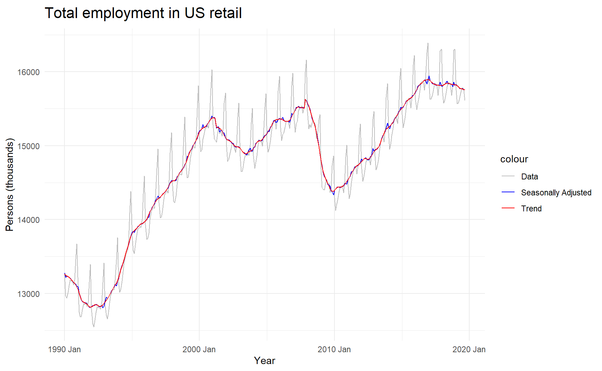
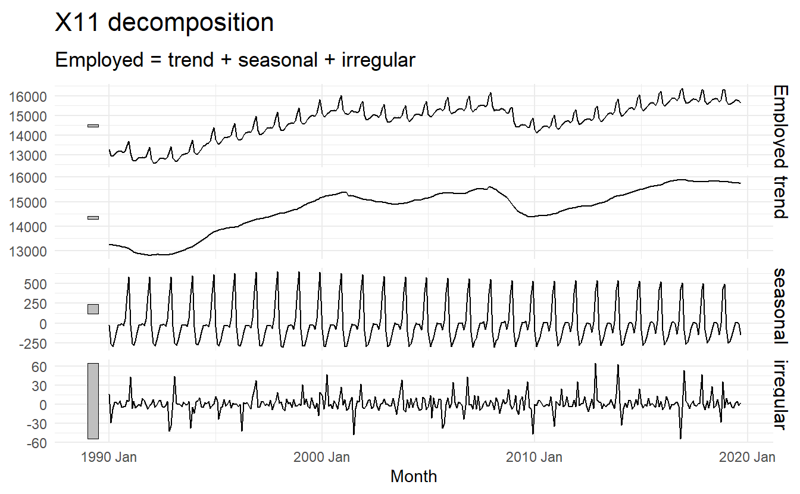
It can be useful to use seasonal plots and seasonal sub-series plots of the seasonal component. These help us to visualise the variation in the seasonal component over time. In this case, there are only small changes over time.
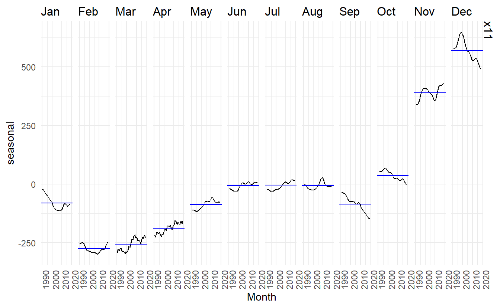
To campare these x11 and classical model, we can specify multiple models in models, this plot shows that the estimated seasonal effect of x11 model have deviated a bit in the recent decade and that the classical model are truncated on both sides, though this two models may not practically have a meaningful difference in this case.
us_retail_employment %>%
model(classical = feasts:::classical_decomposition(Employed, type = "additive"),
x11 = feasts:::X11(Employed, type = "additive")) %>%
components() %>%
autoplot()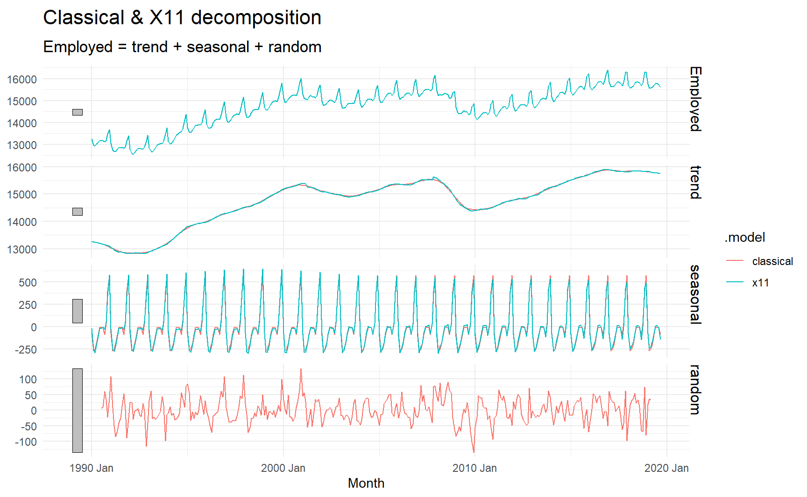
3.5 SEATS decomposition
The procedure works only with quarterly and monthly data. So seasonality of other kinds, such as daily data, or hourly data, or weekly data, require an alternative approach.
Only monthly and quarterly.
seats_dcmp <- us_retail_employment %>%
model(seats = feasts:::SEATS(Employed)) %>%
components()
seats_dcmp %>%
autoplot() +
ggtitle("SEATS decomposition of total US retail employment")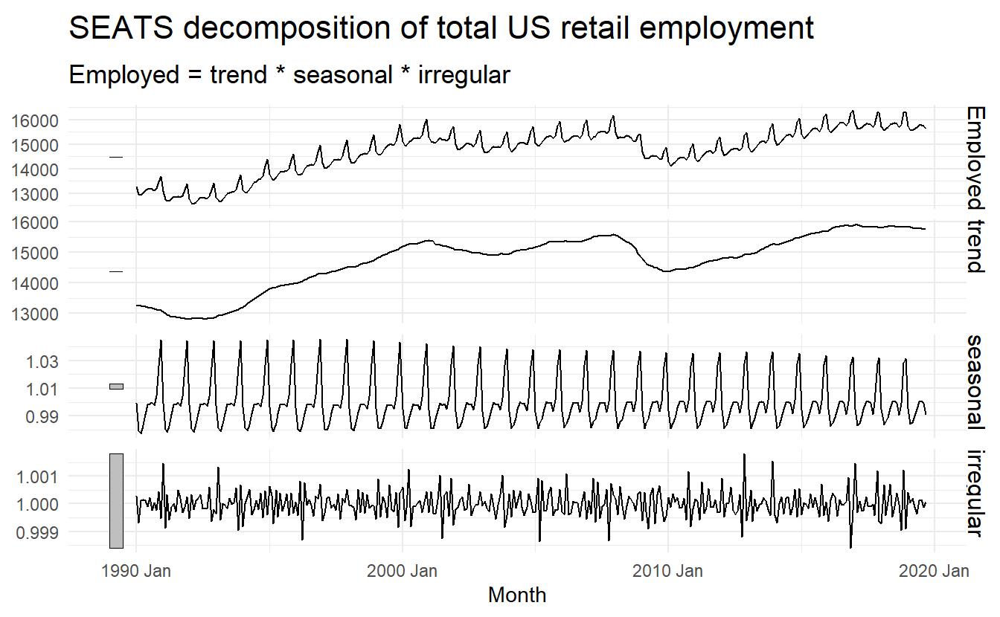
3.6 STL decomposition
STL is a versatile and robust method for decomposing time series. STL is an acronym for “Seasonal and Trend decomposition using Loess”, while Loess is a method for estimating nonlinear relationships.
STL has several advantages over the classical, SEATS and X11 decomposition methods:
- Unlike SEATS and X11, STL will handle any type of seasonality, not only monthly and quarterly data.
- The seasonal component is allowed to change over time, and the rate of change can be controlled by the user.
- The smoothness of the trend-cycle can also be controlled by the user.
- It can be robust to outliers (i.e., the user can specify a robust decomposition), so that occasional unusual observations will not affect the estimates of the trend-cycle and seasonal components. They will, however, affect the remainder component.
us_retail_employment %>%
model(STL(
Employed ~ trend(window = 7) + season(window = Inf), robust = TRUE)) %>%
components() %>%
autoplot()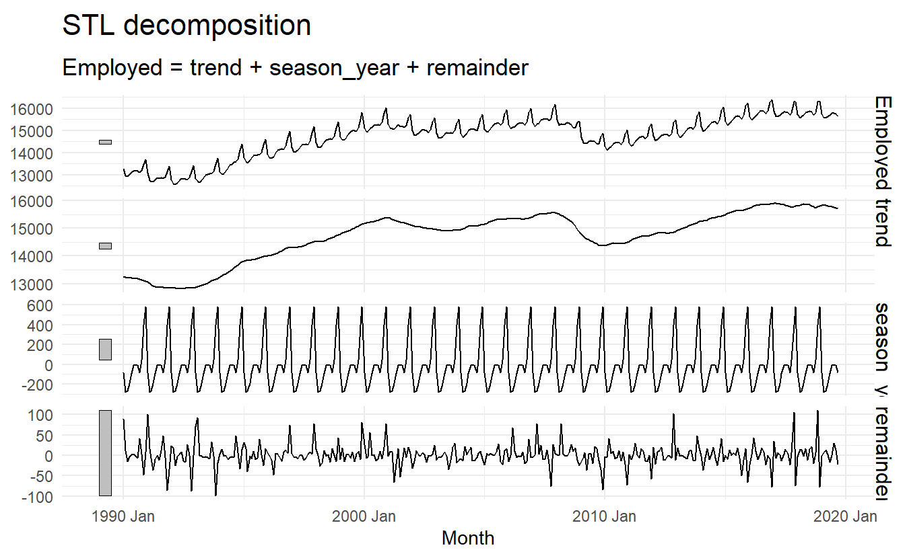